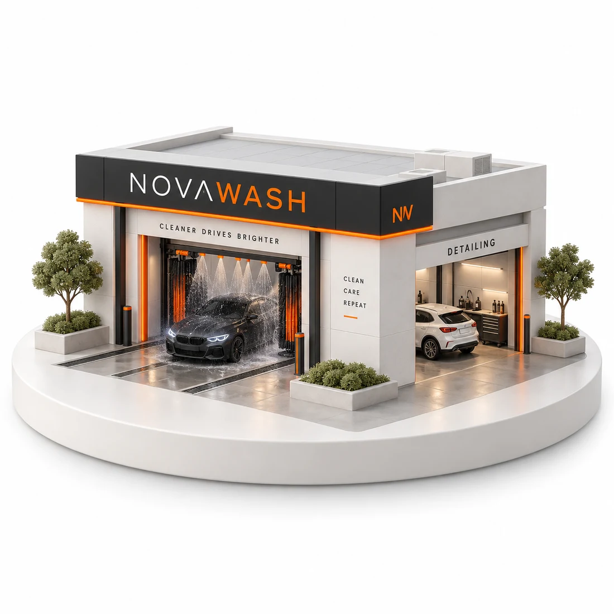
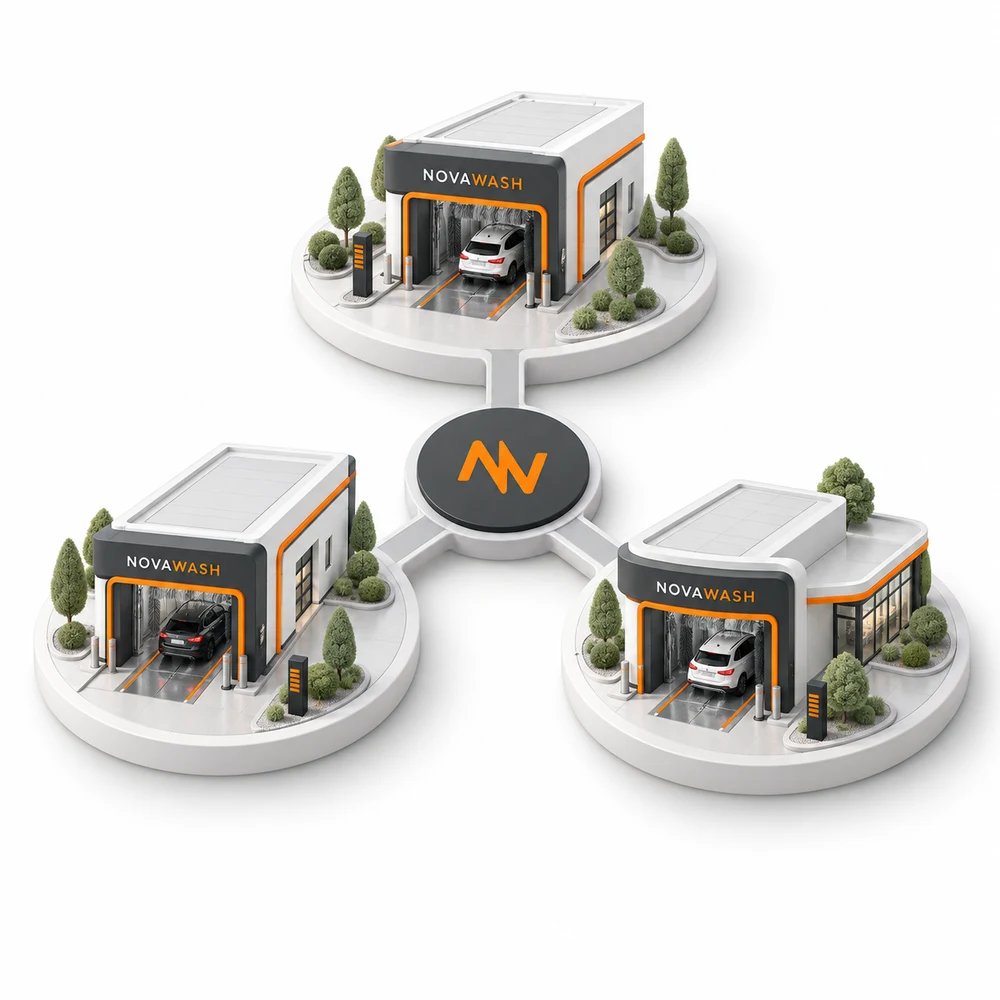

NOVAWASH PARTNERS
Tu capital.
Un nuevo
NovaWash.
Participa en el próximo capítulo del lavado automatizado. Un modelo desde $10 millones, con la operación a cargo de NovaWash.
Quiero conocer la oportunidadAgenda una llamada de 30 minutos. Sin compromiso.

PARTICIPA DESDE$10 millonesCOP · Aporte mínimo propuesto
Lavado automatizadoOperación NovaWashPrograma de partners
Registra tu interés y agenda una llamada personalizada para conocer la oportunidad.
Más que conocer el negocio,
puedes hacer parte de él.
Una propuesta para impulsar nuevos lavaderos y participar en sus resultados. Conoce las condiciones en una llamada personalizada.
ESCENARIO ILUSTRATIVO
28% E.A.
Una referencia para conversar.
No una tasa ofrecida.
Ejemplo matemático solicitado por la dirección, sin validación financiera del negocio. No es una rentabilidad prometida ni garantizada. El rendimiento real puede ser menor, cero o negativo.
Visualiza tu participación
Si se alcanzara ese escenario en el primer año:
Aporte de ejemplo$10.000.000Rendimiento hipotético del primer año$2.800.000
Antes de retenciones. No incluye devolución del aporte ni valorización del capital. Ilustración al 28% E.A., no proyección validada ni derecho de cobro.
Conocer condiciones en una llamada*Pagos sujetos a utilidades, caja y contrato. Cumplir 24 meses no garantiza devolución del aporte. La cesión requiere comprador y las condiciones aplicables. Existe riesgo de pérdida parcial o total.
Una comunidad.
Una nueva forma de crecer.
El capital se reúne. NovaWash se encarga de operar. La participación y los derechos se acuerdan antes de invertir.
PARTICIPACIÓN
El próximo
lavadero NovaWash.
Una propuesta para reunir aportes e impulsar el montaje de nuevas unidades.
$10 MAporte mínimo
15 aportesEjemplo de financiación
$150 MMontaje aproximado
15 aportes de $10 M suman $150 M. No son cupos vendidos. Capital de trabajo y contingencias requieren presupuesto adicional.
Conocer el proyectoVISIÓN DE CRECIMIENTO
Una red.
Más posibilidades.
Un modelo que busca replicar la operación de NovaWash en nuevas ubicaciones.

GestiónA cargo de NovaWash
PartnersBeneficios propuestos
SeguimientoDe tu participación
Red ilustrativa, no sedes activas anunciadas. Cada aporte tiene el alcance y los derechos definidos en su contrato.
Hablar con NovaWash PartnersNo solo participas.
También eres partner.
Una relación que va más allá del aporte, con beneficios propuestos para ti y tus vehículos.
Beneficios en lavadas
Acceso a tarifas partner para tus vehículos, con límites y condiciones definidos.
Atención cercana
Un canal para resolver tus inquietudes y acompañar tu proceso.
Información a tu alcance
Un espacio para consultar tu aporte, documentos y distribuciones cuando se active tu cuenta de socio.
Programa sujeto a activación y contrato. Los beneficios no son rendimientos financieros ni se canjean desde esta página.
CONVERSEMOS DE TU PARTICIPACIÓN
Agenda una llamada
con el equipo de
NovaWash Partners.
Escoge el día y la hora que mejor te funcionen. Al continuar, completa tus datos para registrar tu interés.
- 1Elige tu horario
Una conversación de 30 minutos.
- 2Registra tus datos
Nombre, teléfono y correo en el calendario.
- 3Conoce el proyecto
Revisamos condiciones, riesgos y próximos pasos.
Registro y cita gestionados en Kreed. Revisa los términos y autorizaciones del formulario antes de enviarlo. Agendar no crea una cuenta de inversión ni compromete tu dinero.
Antes de dar
el siguiente paso.
Lo esencial aquí. Los detalles y documentos, antes de invertir.
¿El 28% E.A. está garantizado?
No. Es un escenario matemático ilustrativo, no una tasa ofrecida ni una estimación validada del rendimiento de NovaWash. La participación depende de resultados y condiciones contractuales. Puede perderse parte o todo el capital.
¿Cuándo se reciben pagos y cuándo puedo salir?
El esquema propuesto contempla un primer pago al año y luego distribuciones mensuales, si hay utilidades y caja. Permanencia mínima de 24 meses, sin reembolso automático al vencer. La venta o cesión depende de un comprador y de lo pactado.
¿Qué sucede después de registrarme?
Primero tienes una llamada informativa. Antes de un aporte deben definirse la estructura jurídica, los derechos, el reparto, los riesgos y los contratos. Hoy no se reciben pagos ni se emiten participaciones desde esta página.